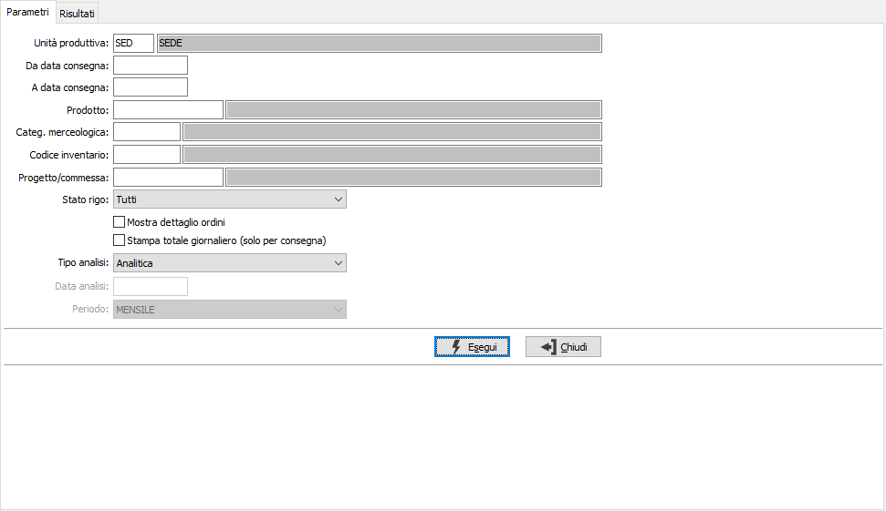

Analisi MPS
Disponibile sia dalla gestione piano sia da menù la funzione consente l’analisi degli ODP in corso.
L'analisi ha le stesse funzioni riportate nell'analisi MPS della gestione del piano di produzione; nei parametri viene richiesta in più l'unità produttiva con proposta l'unità produttiva di default valida per l'utente connesso ad OS1; è possibile solo scegliere l'unità produttiva, se gestite in configurazione le unità produttive multiple.
Dalla pagina Risultati, tramite i pulsanti presenti nella Toolbar sarà possibile effettuare la stampa.
